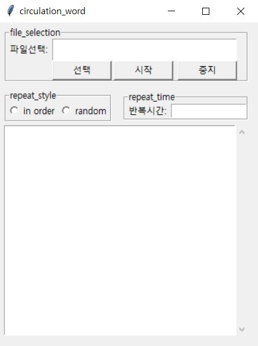

엑셀DB순환

코딩
from tkinter import *
from tkinter import scrolledtext
from tkinter import messagebox
from tkinter import filedialog
from openpyxl import load_workbook
import time
from numpy.random import choice
def choose():
file_name1 = filedialog.askopenfilename(initialdir='path', title='select file',
filetypes=(('*xlsx', '*.xlsx'),('all files', '*.*')))
global files
files=file_name1
if files == '':
messagebox.showwarning("경고", "파일을 추가 하세요")
input_entry.delete(0.0, END)
input_entry.insert(INSERT, files)
def show_data(c_data):
scr.delete(0.0, END)
scr.insert(INSERT,c_data.value)
scr.update() #gui에 새로운 요소가 노출 될 수 있도록 해 줌
WhileBreak = False
def while_break():
global WhileBreak
WhileBreak = True
print("check2: ", WhileBreak)
def show_xl():
radSel=radVar.get()
if radSel==1:
while True:
for row in load_workbook(files)['Sheet1']:
for cell_data in row:
show_data(cell_data)
time.sleep(int(retime_entry.get()))
global WhileBreak
print("check1: ", WhileBreak)
if WhileBreak:
break
if WhileBreak:
break
if WhileBreak:
WhileBreak = False
break
elif radSel==2:
while True:
cell_data =choice(load_workbook(files)['Sheet1']['a'])
show_data(cell_data)
time.sleep(int(retime_entry.get()))
if WhileBreak:
WhileBreak = False
break
win = Tk()
text= Text(win,wrap=WORD)
win.geometry("350x450+1000+0") #340x250+3480+30
win.title('circulation_word')
ch_csvtoxl=LabelFrame(win, text='file_selection')
ch_csvtoxl.grid(column=0, columnspan=2, row=0, padx=8, pady=5)
chlb=Label(ch_csvtoxl, text="파일선택:",width=8).grid(column=0, row=0,sticky='W')
input_entry= Text(ch_csvtoxl, height=2, width=35, wrap=WORD)
input_entry.grid(column=1,columnspan=3, row=0,sticky='W')
lbID4=Label(ch_csvtoxl, text="",width=1).grid(column=4, row=0,sticky='W')
b1 = Button(ch_csvtoxl,text="선택",width=10, command=choose).grid(column=1, row=1,sticky='W')
b2 = Button(ch_csvtoxl,text="시작",width=10, command=show_xl).grid(column=2, row=1,sticky='W')
b3 = Button(ch_csvtoxl,text="중지",width=10, command=while_break).grid(column=3, row=1,sticky='E')
repeat_time=LabelFrame(win, text='repeat_time')
repeat_time.grid(column=1, row=1, padx=8, pady=5)
retime=Label(repeat_time, text="반복시간:",width=8).grid(column=0, row=0,sticky='W')
retime_entry= Entry(repeat_time, width=14)
retime_entry.grid(column=1, row=0,sticky='W')
radVar=IntVar()
repeat_style=LabelFrame(win, text='repeat_style')
repeat_style.grid(column=0, row=1, padx=8, pady=5)
restyle1=Radiobutton(repeat_style, text="in order", variable=radVar, value=1).grid(column=0, row=0,sticky='W')
restyle2=Radiobutton(repeat_style, text="random", variable=radVar, value=2).grid(column=1, row=0,sticky='W')
scr = scrolledtext.ScrolledText(win, width=44, height=20, wrap=WORD)
scr.grid(column=0,columnspan=2, row=2)
scr.config(font=("Consolas", 9))
win.mainloop()